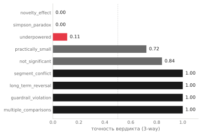
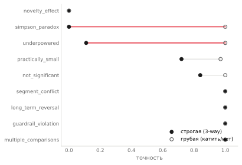

Карта слепых зон: где языковые модели ошибаются в A/B-решениях — и как метрика прячет правду
Я прогнал две модели Claude через девять типов A/B-ловушек. Получилась карта: на одних модель почти безупречна, на других проваливается в ноль. Но самое интересное — не где она ошибается, а то, что половина «ошибок» оказалась артефактом измерения. Выбор метрики решает, провалилась модель или справилась — на одних и тех же ответах.
Что было до этого
Это третий разбор серии о надёжности LLM в A/B-решениях. В первом я показал, что «рассуждение по схеме» снижает точность сильных моделей. Во втором — что модель теряет честность на красивых данных. Оба раза всплывал один вопрос, на который я не отвечал прямо: а где вообще проходит граница — что модель в A/B-решениях ловит, а что нет?
Эта статья — карта. Девять типов ловушек, две модели, явная разметка «где сильна, где слепа». И один методологический поворот, который, кажется, важнее самой карты.
Как читать карту
Каждая ловушка — это тип A/B-ситуации с однозначно правильным вердиктом, который выводится из данных, но требует не попасться. Модель видит контракт и таблицу результатов, выносит вердикт: ship, no-ship или investigate. Я сравниваю с эталоном по каждому типу.
Вот точность по типам, от худшей к лучшей (Sonnet 4.6, свободный режим; Haiku 4.5 даёт ту же картину):

На первый взгляд — рваная картина: где-то идеально, где-то ноль. Но в ней есть структура.
Слой 1: что модель ловит, а что нет
Разделите типы по тому, где спрятан подвох.
Там, где подвох в данных — модель сильна. Пробит guardrail? Это видно в цифрах: метрика-предохранитель упала ниже порога, модель ловит. Значимость от множества сравнений? Видно, что тестов много. Сегменты явно расходятся? Видно в разбивке. Во всех этих случаях нужно заметить плохое, которое присутствует в таблице — и модель замечает.
Там, где подвох не в данных — модель слепнет. novelty: рост реальный и значимый, подвох в том, что это новизна, а сигнала об этом в семидневном окне нет. simpson: агрегат честно растёт, подвох в том, что нужно не поверить агрегату и посмотреть сегменты. underpowered: подвох в том, что данных не хватает — это отсутствие, а не присутствие.
Вот граница: модель ловит ловушки, где надо заметить плохое в данных, и слепнет на ловушках, где надо усомниться в хорошем или заметить отсутствие. Это та же природа, что во второй статье — модель верит убедительной поверхности. Карта показывает, что это не частный случай novelty, а системное свойство: красивые или полные на вид данные отключают скепсис.
Слой 2: «ошибка» — это не одно состояние
Теперь посмотрите внимательнее на три провала. Они выглядят одинаково — низкая точность, — но это три разных типа несовершенства.
novelty — уверенная неправота. Модель катит то, что катить нельзя, с высокой уверенностью. Это настоящая опасность: неправильное действие, сделанное убеждённо.
simpson — незавершённое суждение. Эталон — no-ship (агрегат врёт, оба сегмента отрицательные). Модель отвечает investigate во всех 24 случаях. Она увидела проблему — недаром не катит, — но не довела до вывода «значит, не запускаем». Остановилась на «надо копать». Это не опасность, это нерешительность.
underpowered — почти правота. Эталон — investigate (данных мало, решить нельзя). Модель отвечает no-ship. Формально мимо. Но по сути — она тоже не катит то, что недоказано. Разница между «не катим, разберись» и «не катим» — оттенок, а не ошибка.
Три состояния: уверенно неправа, видит-но-не-дорешает, по сути права. Назвать всё это словом «ошибка» — значит потерять то, что важнее всего: только одно из трёх опасно.
Слой 3: метрика решает, провалилась модель или нет
И вот главное. Я пересчитал ту же таблицу двумя метриками. Строгая — трёхвариантная: вердикт должен точно совпасть (ship / no-ship / investigate). Грубая — бинарная: достаточно угадать «катить или не катить», без различия между no-ship и investigate.

| тип ловушки | строгая (3-way) | грубая (катить/нет) |
|---|---|---|
| novelty_effect | 0.00 | 0.00 |
| simpson_paradox | 0.00 | 1.00 |
| underpowered | 0.11 | 1.00 |
| practically_small | 0.72 | 0.97 |
| not_significant | 0.84 | 1.00 |
| остальные | 1.00 | 1.00 |
Прочитайте строки simpson и underpowered. Строгая метрика: ноль и ноль-целых-одиннадцать — катастрофа. Грубая: единица и единица — идеал. Та же модель, те же ответы, противоположный вывод о её качестве.
Что произошло. На simpson и underpowered модель ни разу не сделала опасного — она не катила то, что катить нельзя. Она лишь выбирала «не тот оттенок не-катить»: investigate вместо no-ship или наоборот. Бинарная метрика, которой важно только «катить или нет», засчитывает это как правильное. Строгая, которой важен точный вердикт, — как провал.
Отсюда два противоположных искажения, и оба опасны для того, кто строит eval.
Грубая метрика прячет единственную реальную угрозу. По бинарной метрике у модели один провал — novelty. Остальное идеально. Выглядит как «модель надёжна». Но novelty — это ровно тот случай, где она катит вредное, и он тонет в общем зачёте «всё хорошо».
Строгая метрика топит угрозу в шуме ложных тревог. По 3-way у модели куча «провалов» — simpson, underpowered, practically_small. Выглядит как «модель ненадёжна везде». Но почти все эти провалы — безобидные оттенки осторожности, а единственная настоящая опасность (novelty) стоит в том же списке, неотличимая по величине.
Вывод, который я считаю важнее карты: карта ошибок модели — это во многом карта ваших решений о том, как мерить. Бинарная метрика отвечает на вопрос «безопасна ли модель — не катит ли она вредное». Трёхвариантная — на вопрос «насколько точны её вердикты». Это разные вопросы, и одна метрика не отвечает на оба. Если вы оцениваете LLM на решениях одним числом точности — вы уже выбрали, какой из двух вопросов задать, возможно сами того не заметив.
Чего эта карта не доказывает
Две модели, не вся линейка — Sonnet и Haiku; Opus в этом прогоне не участвовал. Но обе модели ломаются на одних и тех же типах, разброс между ними мал — то есть карта описывает обобщённое поведение этого класса моделей, а не особенность одной. Ранжирование моделей здесь не цель; цель — типология ошибок.
Девять типов — не все. A/B-ловушек куда больше; это срез, который я успел оцифровать. Полная карта потребует больше типов, и это следующая работа.
Кейсы синтетические, по одному прогону, температура по умолчанию. На чётких контрастах — 0.00 против 1.00 — это картину не меняет, но точные числа в середине (0.72, 0.84) на повторных прогонах поплывут на пару процентов.
Ни одно из этого не трогает главного: расхождение строгой и грубой метрик на simpson и underpowered — наблюдаемый факт, и он означает, что без выбора правильной метрики вывод о модели зависит от случайности этого выбора.
Что с этим делать
Если вы оцениваете LLM на любых решениях — не на A/B, на любых, — сначала ответьте, какой вопрос задаёте: «безопасна ли модель» или «точна ли она». Это разные метрики. Бинарная (сделала ли модель опасное действие) ловит угрозу, но прощает неточность. Многовариантная (попала ли точно) видит неточность, но прячет угрозу в шуме. Считать что-то одно и называть это «точностью» — значит обмануть себя выбором, который вы не проговорили.
Если строите автоматизацию A/B-решений на модели — знайте, где она слепа. Она надёжна там, где плохое видно в данных, и подводит там, где надо усомниться в хорошем (novelty) или заметить нехватку данных (underpowered). Встройте проверку именно на этих типах — на красивых и на скудных входах, не на явно-проблемных.
Карта ошибок модели — это во многом карта ваших решений о том, как мерить. Модель надёжна там, где плохое видно в данных, и слепа там, где надо усомниться в хорошем или заметить отсутствие. А выбор метрики решает, увидите ли вы единственную реальную угрозу или утопите её в шуме безобидных оттенков осторожности. Проверяйте не уверенность и не объяснение модели, а попадание — и тем инструментом, который отвечает на ваш настоящий вопрос.
Код, корпус из девяти типов ловушек и полные результаты — в репозитории ab-decisions-bench. Это третья статья серии о надёжности LLM в A/B-решениях: первая — про схему рассуждения, вторая — про честность на красивых данных.